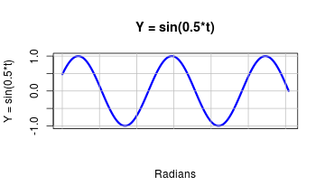
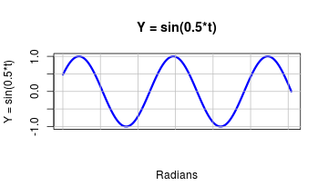
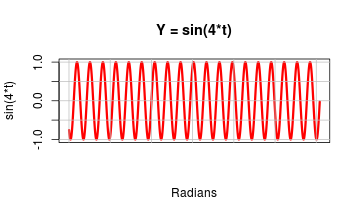
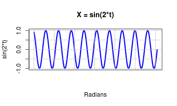

Slide 1
A Lissajous curve is a tool for compairing trigonometric sine functions. The curve is used in signal processing, audio engineering, and many other disciplines.
The basic sine function \(Y = sin(t)\) looks like this:
A Lissajous curve is a tool for compairing trigonometric sine functions. The curve is used in signal processing, audio engineering, and many other disciplines.
The basic sine function \(Y = sin(t)\) looks like this:
If we multiply the variable $t$ by some number, we can either stretch out or compress the graph.
 

We say that these two graphs have different periods or frequencies. Plotting one of these sines on the X-axis, and the other on the Y-axis, creates the Lissajous curve and makes it easy to compare pairs of sine functions with different frequency relationships.
The Lissajous curve for the previous two sine functions \(Y=sin(3*t)\) and \(X=sin(0.5*t)\)


looks like this:

The Lissajous curve for a different pair of sine functions \(Y=sin(4*t)\) and \(X=sin(2*t)\)  
looks like this:

A Lissajous curve describes the relationship between two oscillators vibrating simultaneously. Equations for a Lissajous curve can take the simplified form:
X = sin(A*t) Y = sin(B*t)
Use the Lissajous app at https://r-handsfield.shinyapps.io/lissajous_app to compare different pairs of sine functions. Move the sliders to change each function's frequency, then view the resulting Lissajous curve.